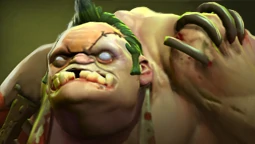

Pudge — це герой із близьким типом атак, основним атрибутом якого є сила атрибута Strength. Його первая здатність, Meat Hook, бросає окровавленний крюк у визначену область або юнита. Крюк зацепиться за першого юнита, в якому попаде, притащить його до Pudge і нанесе урон, якщо це враг. Вторая здатність, гниття, токсичне облако, викликане із-за гноєння, постійно наносить урон і замедляє противників, ранить не тільки вражеських юнитів, але і самого Pudge. Пасивна здатність, Flesh Heap, дає Pudge додаткове протидію магії, а також доповнювальну силу, яка збільшується, коли Pudge убиває вражеського героя або той умирає поблизу. Спосібність починає накапливати заряди вже до того, як буде виучена, але отримати силу героя зможе, тільки випливає її. Ультимативною здатністю Dismember, Pudge починає заживо пожирати вражеського юнита, зволожуючи його і нанося періодичний урон. Покупка Aghanim's Shard icon.png Aghanim's Shard дозволяє використовувати Dismember на союзника, тим самим проглотив його, зробивши неуразливим і відновлюючи 4% від максимального здоров'я в секунду, союзник може в будь-який момент вийти з володіння здатністю.